Demonstrate computing angles for a sail with a pair of vanes.
Explore effects of sail cone angle on vane control output. Uses a 2 vane example (PlateWithVanes).
Since version 9. ------------------------------------------------------------------------ See also SolveVaneAngles, SailDisturbance, Theta0, DrawSCPlanPlugIn, Cone, Constant, InformDlg, NewFig, Plot2D, TitleS, XLabelS, YLabelS, Unit, Date2JD, El2RV, ConeClockToU, QSail, DisturbanceStruct, EnvironmentStruct, ProfileStruct, SailEnvironment, CP1Props, UpdateSailOpticalProps, ApplyProfileToModel, SailPropsToAccel ------------------------------------------------------------------------
Contents
- Set up the problem
- Use a CAD model to get actual torque produced by vanes
- Define spacecraft properties
- Vane area
- Maximum torque
- Environment and disturbance models
- Profile: orbit, attitude
- Environment will be constant over this short period
- Compute full disturbances for different vane angles and sail attiude
- (Vanes don't produce a pure roll torque for nonzero cone angle)
- Plot the curves for a single vane angle and all cone angles
- Plot the torque profiles in each axis
- Redo above analysis with a smaller set of vane angles
- to the sun.
- Investigate differential vane commanding for pure roll torque
- that gives the desired torque.
- A small torque is generated in the 3rd axis, increasing with cone angle.
- Redo angle solving with non-ideal optical properties
- degree, while for the offset angles it is less than 0.5 degree.
- Animate angles (ideal case) using DrawSCPlanPlugIn
%------------------------------------------------------------------------------- % Copyright 2009 Princeton Satellite Systems, Inc. % All rights reserved. %-------------------------------------------------------------------------------
Set up the problem
%-------------------- clear SailDisturbance
Use a CAD model to get actual torque produced by vanes
%------------------------------------------------------- g = load('PlateWithVanes');
Define spacecraft properties
%----------------------------- mass = g.mass.mass; % spacecraft mass in kg lSail = max(max(g.component(2).v)); % sail length along one side in m area = sum(g.component(2).a); acc0 = SailPropsToAccel( area, mass );
Vane area
%------------- areaVane = g.component(3).a; % m2
Maximum torque
%--------------- thetaMax = 80*pi/180; Ps = Constant('solar pressure mks'); fVane = 2*Ps*areaVane; Tmax = 2*lSail*fVane*sin(thetaMax);
Environment and disturbance models
%-----------------------------------
d = struct;
d = EnvironmentStruct( d );
d = DisturbanceStruct( d );
d.aeroOn = 0;
d.albedoOn = 0;
d.magOn = 0;
d.radOn = 0;
Profile: orbit, attitude
%------------------------- jD = Date2JD; [r,v] = El2RV([Constant('au') 0 0 0 0 0],[],Constant('mu sun')); uSun = -Unit(r); qS = QSail( uSun, r, v ); p = ProfileStruct; p.q = qS; p.r = r; p.v = v; p.jD = jD; % states for rotating vanes p.body = [2 3]; p.angle = [0; 0]; p.axis = [0 0 1; 0 0 1]';
Environment will be constant over this short period
%---------------------------------------------------- env = SailEnvironment( 'sun', p, d );
Compute full disturbances for different vane angles and sail attiude
%---------------------------------------------------------------------- disp('Sail vanes demo ----------------------') % Disturbances [f, tq] = SailDisturbance( g, p, env, d ); disp('Torque for all zero angles - should be zero!') tq.total % Now rotate the vanes with the sail straight-on to the sun p.angle = [20; 20]*pi/180; [f, tq] = SailDisturbance( g, p, env, d ); disp('Torque for vanes angles of 20 degrees - pure roll torque') tq.total % Next give the sail a cone angle - see torques in other axes cone = pi/6; clock = 0; [u,qItoCC] = ConeClockToU( cone, clock, qS ); p.q = qItoCC; [f, tq] = SailDisturbance( g, p, env, d ); disp('Torque for vanes angles of 20 degrees with cone angle of 30 degrees;') disp('no longer a pure roll torque but evenly distributed in two axes.') tq.total % Now give the sail a clock angle - no change clock = pi/4; [u,qItoCC] = ConeClockToU( cone, clock, qS ); p.q = qItoCC; [f, tq] = SailDisturbance( g, p, env, d ); disp('Clock angle doesn''''t change the body torques') tq.total % Investigate the effect of cone angle on the three-axis torque produced
Sail vanes demo ----------------------
Torque for all zero angles - should be zero!
ans =
-9.5352e-18
1.3878e-17
7.5266e-17
Torque for vanes angles of 20 degrees - pure roll torque
ans =
0.21871
0
7.4593e-17
Torque for vanes angles of 20 degrees with cone angle of 30 degrees;
no longer a pure roll torque but evenly distributed in two axes.
ans =
0.1718
0.19171
-0.0032355
Clock angle doesn''t change the body torques
ans =
0.1718
0.19171
-0.0032355
(Vanes don't produce a pure roll torque for nonzero cone angle)
%----------------------------------------------------------------------- cones = linspace(0,pi/4,50); clock = 0; vanes = [10;20;30;40;50;65;80]; zz = zeros(length(vanes),length(cones)); torqueX = zz; torqueY = zz; torqueZ = zz; for k = 1:length(cones) [u,qItoCC(:,k)] = ConeClockToU( cones(k), clock, qS ); p.q = qItoCC(:,k); for j = 1:length(vanes) p.angle = vanes(j)*[1; 1]*pi/180; [f, tq] = SailDisturbance( g, p, env, d ); torqueX(j,k) = tq.total(1); torqueY(j,k) = tq.total(2); torqueZ(j,k) = tq.total(3); end end conePlot = cones*180/pi;
Plot the curves for a single vane angle and all cone angles
%------------------------------------------------------------ % Nominal curves, at 20 degrees Plot2D(conePlot,[torqueX(2,:);torqueY(2,:);torqueZ(2,:)],'Cone Angle','Torque (Nm)','Vane Torque (20 degree rotation) with cone angle') % Confirm typical magnitude curve when cone is zero Plot2D(vanes',torqueX(:,1)','Vane Angle','Max Torque (Nm)','Vane Torque when sail cone angle is zero')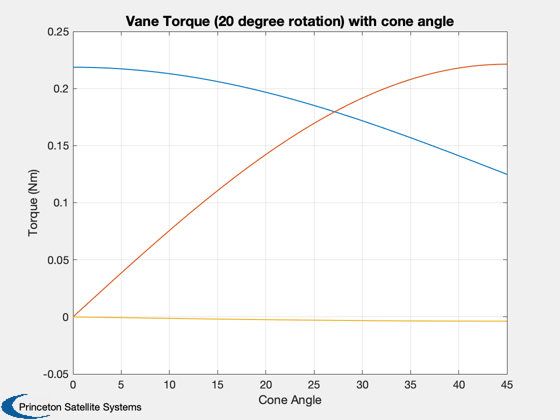 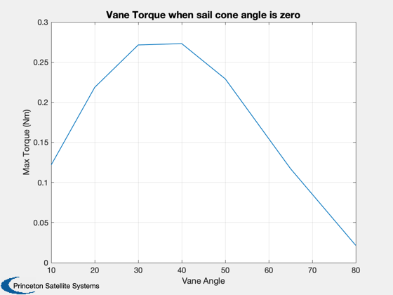
Plot the torque profiles in each axis
%-------------------------------------- NewFig('Torque Profiles') TitleS('Vane Torques For Varying Cone Angle') subplot(2,1,1) plot(conePlot,torqueX) YLabelS('Roll Torque (Nm)') grid on subplot(2,1,2) plot(conePlot,torqueY) grid on YLabelS('Overturning Torque (Nm)') XLabelS('Cone Angle') legH = legend(num2str(vanes)); set(legH,'fontsize',9)
Redo above analysis with a smaller set of vane angles
%------------------------------------------------------- clock = 0; vanes = 2:2:16; torqueX = zz; torqueY = zz; torqueZ = zz; for k = 1:length(cones) p.q = qItoCC(:,k); for j = 1:length(vanes) p.angle = vanes(j)*[1; 1]*pi/180; [f, tq] = SailDisturbance( g, p, env, d ); torqueX(j,k) = tq.total(1); torqueY(j,k) = tq.total(2); torqueZ(j,k) = tq.total(3); end end % This figure shows that when the sail has an angle to the sun, and the % vanes have equal angles, an overturning torque is produced in addition to % the roll torque. This is because the vanes have different apparent areas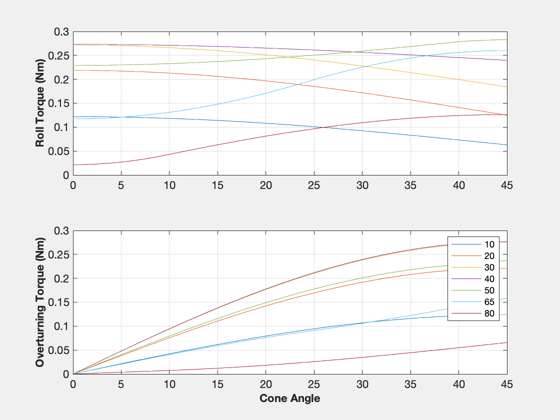
to the sun.
%-------------------------------------------------------------------------- NewFig('Torque Profiles') subplot(2,1,1) plot(conePlot,torqueX) grid on YLabelS('Roll Torque (Nm)') TitleS('Vane Torques For Varying Cone Angle') subplot(2,1,2) plot(conePlot,torqueY) grid on YLabelS('Overturning Torque (Nm)') XLabelS('Cone Angle') legH = legend(num2str(vanes')); set(legH,'fontsize',9)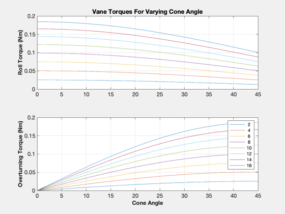
Investigate differential vane commanding for pure roll torque
To achieve a pure roll torque with varying sail cone angle we have to command the vanes to different angles. SolveVaneAngles uses Newton's method with a numerical Jacobian to find the combination of vane angles
that gives the desired torque.
%--------------------------------------------------- Tcommand = [0.1; 0]; % Nominal angle for roll torque, for initialization theta0 = asin(Tcommand(1)./(2*lSail*fVane)); theta = [theta0;theta0]; % Initialize plot matrices torqueSolved = zeros(3,length(cones)); thetas = zeros(2,length(cones)); ks = zeros(1,length(cones)); % Informational window iH = InformDlg( 'Running loop of SolveVaneAngles...', 'SailVanesDemo' ); for k = 1:length(cones) p.q = qItoCC(:,k); [theta,iter] = SolveVaneAngles( Tcommand, theta, g, env, p, d ); p.angle = theta; [f, tq] = SailDisturbance( g, p, env, d ); torqueSolved(:,k) = tq.total; thetas(:,k) = theta; ks(k) = iter; end close(iH) % See that the average angle remains the same and pure roll torque is % achieved. The number of iterations to meet the tolerance is shown. %
A small torque is generated in the 3rd axis, increasing with cone angle.
%------------------------------------------------------------------------- Plot2D(conePlot,thetas*180/pi,'Cone Angle (deg)','Vane Angles') Plot2D(conePlot,torqueSolved,'Cone Angle (deg)','Torque (Nm)') legend('x','y','z') Plot2D(conePlot,ks,'Cone Angle (deg)','Iterations')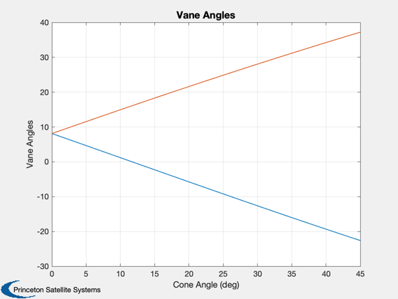 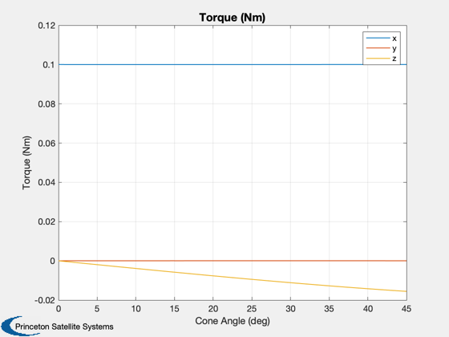 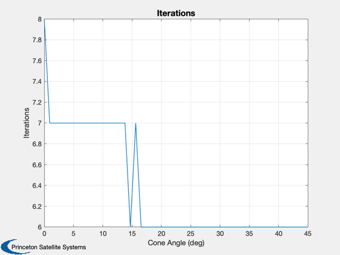
Redo angle solving with non-ideal optical properties
%----------------------------------------------------- [optical, infrared, thermal] = CP1Props; g2 = UpdateSailOpticalProps( g, optical, thermal, infrared ); % Reinitialize angles for solver theta = [theta0;theta0]; % Clear disturbances of ideal model clear SailDisturbance % Informational window iH = InformDlg( 'Running loop of SolveVaneAngles...', 'SailVanesDemo' ); torqueSolved2 = zeros(3,length(cones)); thetas2 = zeros(2,length(cones)); ks2 = zeros(1,length(cones)); for k = 1:length(cones) p.q = qItoCC(:,k); [theta,iter] = SolveVaneAngles( Tcommand, theta, g2, env, p, d ); p.angle = theta; [f, tq] = SailDisturbance( g2, p, env, d ); torqueSolved2(:,k) = tq.total; thetas2(:,k) = theta; ks2(k) = iter; end close(iH) Plot2D(conePlot,[thetas*180/pi;thetas2*180/pi],'Cone Angle (deg)',{'Vane 1','Vane 2'},... 'Vane Angles for Ideal and NonIdeal Properties','lin',{[1 3],[2 4]}) legend('ideal','CP1') Plot2D(conePlot,[torqueSolved;torqueSolved2],'Cone Angle (deg)',{'x','y','z'},... 'Torque for Ideal and NonIdeal Properties','lin',{[1 4],[2 5],[3 6]}) legend('ideal','CP1') % Compare mean and offset angles for two cases. Mean angle is NOT constant. % The different in the mean angles for nonideal properties is over 1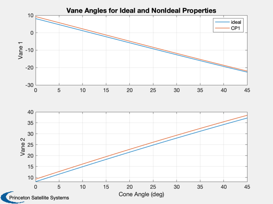 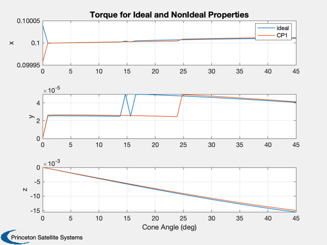
degree, while for the offset angles it is less than 0.5 degree.
%-------------------------------------------------------------------------- m1 = sum(thetas)/2; m2 = sum(thetas2)/2; d1 = thetas - repmat(m1,2,1); d2 = thetas2 - repmat(m2,2,1); Plot2D(conePlot,[m1;m2;m2-m1]*180/pi,'Cone Angle (deg)',{'Mean Vane Angles','Difference'},... 'Mean Vane Angles','lin',{[1 2],3}) subplot(2,1,1) legend('ideal','CP1') Plot2D(conePlot,[d1;d2;d2-d1]*180/pi,'Cone Angle (deg)',{'Vane 1','Vane 2','Differences'},... 'Vane Angle Offsets (deg)','lin',{[1 3],[2 4],[5 6]}) legH = legend('vane 1','vane 2'); set(legH,'fontsize',9) subplot(3,1,1) legH = legend('ideal','CP1'); set(legH,'fontsize',9)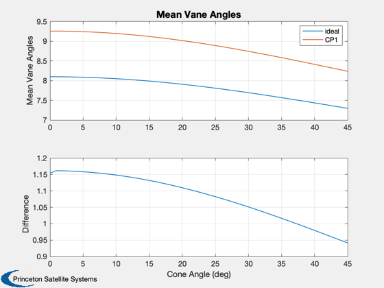 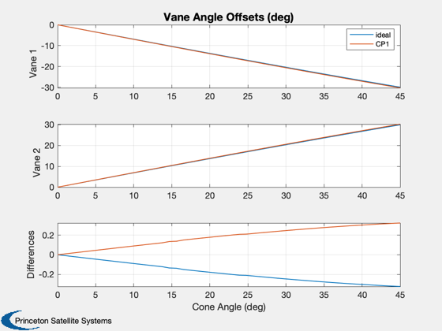
Animate angles (ideal case) using DrawSCPlanPlugIn
%--------------------------------------------------- tag = DrawSCPlanPlugIn( g ); light('position',uSun) hold on; plot3([0 g.radius*uSun(1)],[0 g.radius*uSun(2)],[0 g.radius*uSun(3)],'y','linewidth',3) p.q = qItoCC; p.angle = thetas; for k = 1:length(cones) g = ApplyProfileToModel( g, p, k ); DrawSCPlanPlugIn( 'update', tag, g ) pause(0.4) end %--------------------------------------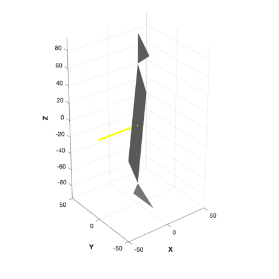